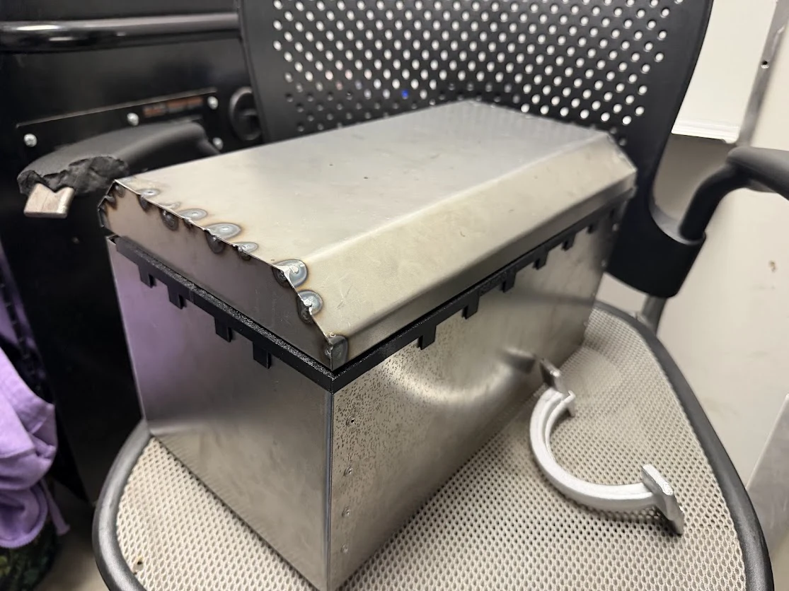
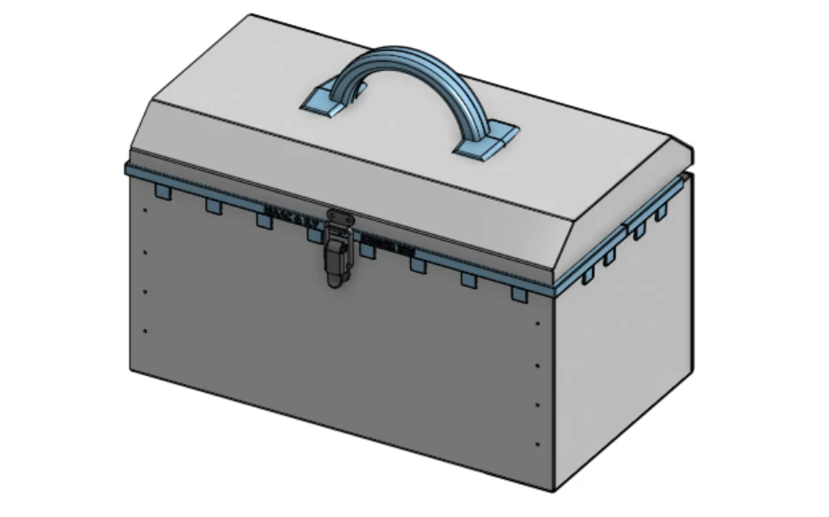

01 / BYU Manufacturing Engineering · In fabrication
Sheet metal toolbox
I designed this 20-gauge mild steel toolbox for a BYU manufacturing engineering class and am currently fabricating it. Fitting the piano hinge showed how small alignment changes affect the way the lid closes.



